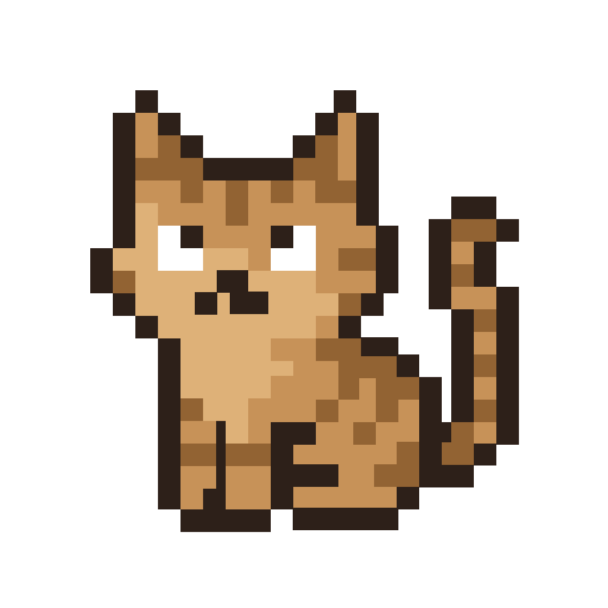
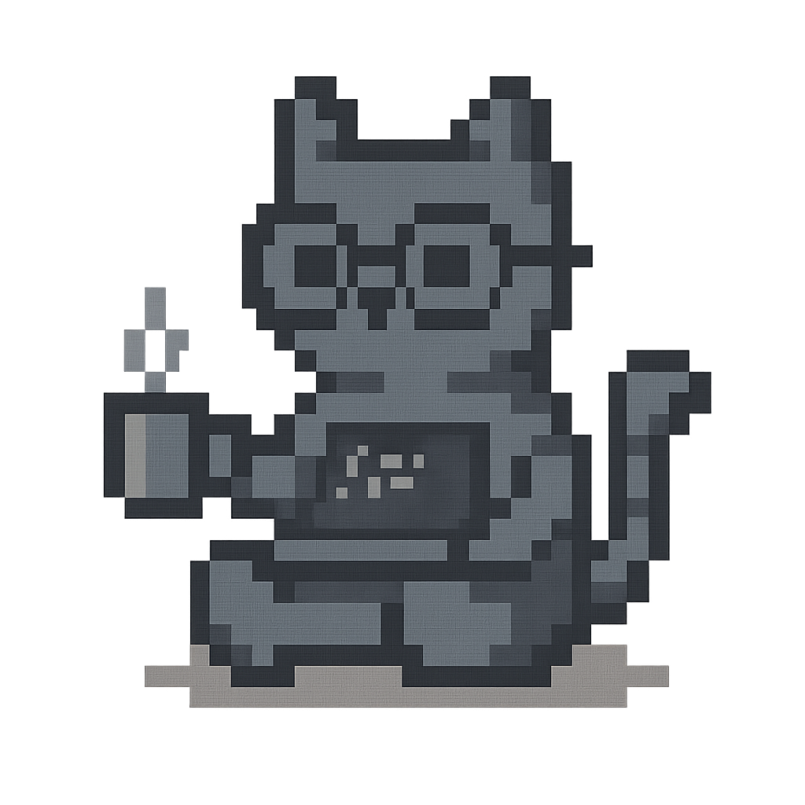

Простой скин

Эпический скин

Легендарный скин
ScreenCat — это уютный виртуальный котик для macOS. Он живёт на вашем рабочем столе, взаимодействует с вами, играет, подшучивает и делает работу веселее.
Вы можете кастомизировать кота с помощью уникальных скинов, которые доступны для покупки прямо внутри приложения.
Каждый скин меняет внешний вид вашего виртуального кота. Скины различаются уровнем детализации, анимацией и редкостью:
Простой скин
Эпический скин
Легендарный скин